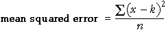
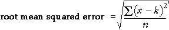

A different approach
Although the interquartile range is a useful and easily interpreted summary of the spread of values in a data set, a different summary of spread called the standard deviation is more commonly used.
The standard deviation is harder to understand than the interquartile range, so we introduce it by first asking how far the data values are from some 'target'.
Distance from a target
As part of their lessons about weight, primary school students are taught to estimate the weight of various common items. How close are the students' guesses to the correct weight of a 3kg item?
- Single value
- The distance of a single student's guess, x, from the target, k, is called the error,
However if we have guessed weights from x students, how do we combine the errors to give a single measure of how close the guesses are to this target?

- This quantity is called the bias and clearly tells us something about whether the students tend to over-estimate or under-estimate the weights.
- However even if the bias is zero, individual students may have guesses that are very different from the target, k.
- Mean squared error
- One solution to the problem of negative errors is to square them before averaging,

- Root mean squared error
- The main problem with the mean squared error is that its units are the square
of those of the raw data. For example, the guessed weights are kg, so the squared
errors are 'squared kg' and the mean squared error is also 'squared kg'. How do
you interpret a value with these units?
The solution is to take the square root to return the value to the original units.

| The root mean squared error is a 'typical' error. |
Guessed weights
The diagram below shows the guessed weights of a 3kg object from seven students.
A square is drawn for each data value whose sides have length equal to the error for that student's guess.
| The area of each square is the squared error for the value. |
The root mean squared error is the side length of the square whose area is the average of the areas of the squares. It is shown in red on the diagram.
Drag the crosses to see how the values affect the root mean squared error.
You may notice that an outlier corresponds to a square with a very large area, so it has a disproportionate effect on the root mean squared error.